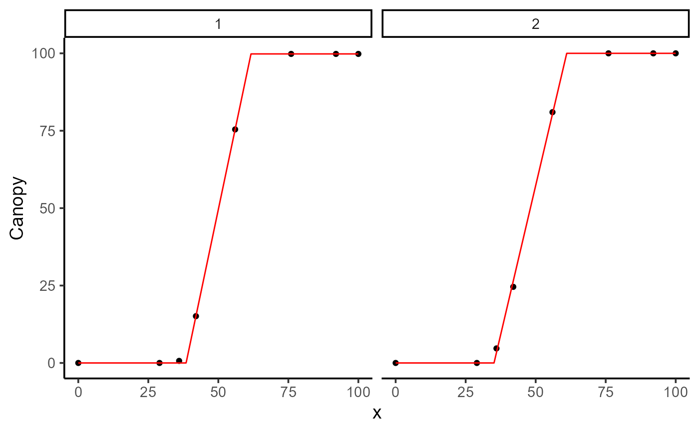
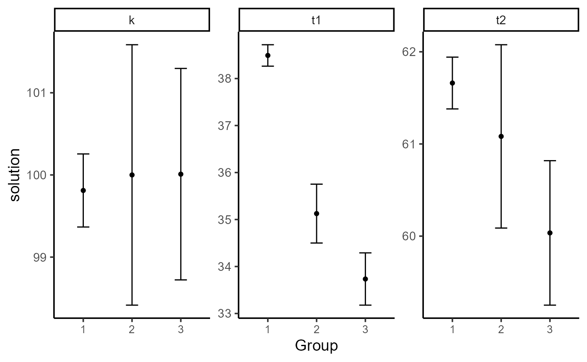
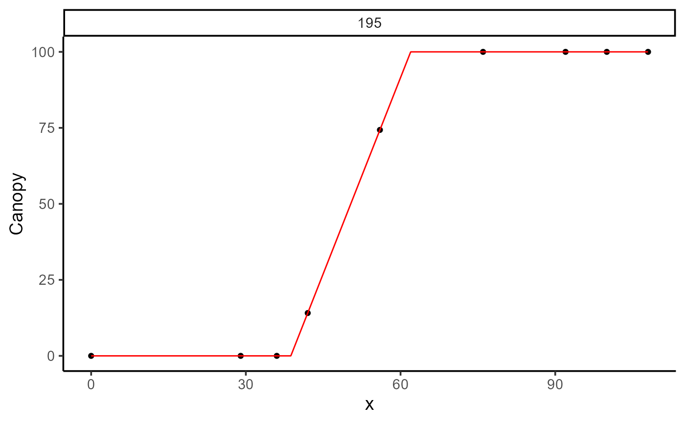

Create several plots for an object of class modeler
Usage
# S3 method for class 'modeler'
plot(x, id = NULL, label_size = 4, base_size = 14, ...)Arguments
- x
An object inheriting from class
modelerresulting of executing the functionmodeler()- id
To avoid too many plots in one figure. Filter by group Id.
- label_size
Label size. 3 by default.
- base_size
Base font size, given in pts.
- ...
Further graphical parameters. For future improvements.
Examples
library(exploreHTP)
suppressMessages(library(dplyr))
data(dt_potato)
explorer <- explorer(dt_potato, x = DAP, y = c(Canopy, GLI_2), id = Plot)
# Example 1
mod_1 <- dt_potato |>
modeler(
x = DAP,
y = GLI_2,
grp = Plot,
id = c(1:2),
fn = "fn_lin_pl_lin",
parameters = c(t1 = 38.7, t2 = 62, t3 = 90, k = 0.32, beta = -0.01),
add_zero = TRUE,
max_as_last = TRUE
)
plot(mod_1, plot_id = c(195))

mod_1
#>
#> Call:
#> GLI_2 ~ fn_lin_pl_lin(x, t1, t2, t3, k, beta)
#>
#> Sum of Squares Error:
#> Min. 1st Qu. Median Mean 3rd Qu. Max.
#> 8.211e-06 9.484e-06 1.076e-05 1.076e-05 1.203e-05 1.330e-05
#>
#> Optimization Results `head()`:
#> uid t1 t2 t3 k beta sse auc
#> 1 39.5 65.0 113 0.335 2.99 8.21e-06 18.6
#> 2 37.9 65.3 110 0.363 1.41 1.33e-05 20.5
#>
#> Metrics:
#> Groups Timing Convergence Iterations
#> 2 1.9603 secs 100% 1530 (id)
#>
# Example 2
mod_2 <- dt_potato |>
modeler(
x = DAP,
y = Canopy,
grp = Plot,
id = c(1:2),
fn = "fn_piwise",
parameters = c(t1 = 45, t2 = 80, k = 0.9),
add_zero = TRUE,
max_as_last = TRUE
)
plot(mod_2, plot_id = c(195))

mod_2
#>
#> Call:
#> Canopy ~ fn_piwise(x, t1, t2, k)
#>
#> Sum of Squares Error:
#> Min. 1st Qu. Median Mean 3rd Qu. Max.
#> 0.4489 2.0903 3.7317 3.7317 5.3731 7.0145
#>
#> Optimization Results `head()`:
#> uid t1 t2 k sse auc
#> 1 38.6 61.0 99.8 0.449 5807
#> 2 35.2 60.7 100.0 7.014 6004
#>
#> Metrics:
#> Groups Timing Convergence Iterations
#> 2 0.9548 secs 100% 469 (id)
#>
# Example 3
fixed_params <- explorer$dt_long |>
filter(var %in% "Canopy") |>
group_by(uid) |>
summarise(k = max(y, na.rm = TRUE), .groups = "drop")
mod_3 <- dt_potato |>
modeler(
x = DAP,
y = Canopy,
grp = Plot,
id = 195,
fn = "fn_piwise",
parameters = c(t1 = 45, t2 = 80, k = 0.9),
fixed_params = fixed_params,
add_zero = TRUE,
max_as_last = TRUE
)
plot(mod_3, id = c(195))

mod_3
#>
#> Call:
#> Canopy ~ fn_piwise(x, t1, t2, k)
#>
#> Residuals:
#> Min. 1st Qu. Median Mean 3rd Qu. Max.
#> -2.167e-13 0.000e+00 0.000e+00 -5.132e-15 0.000e+00 1.705e-13
#>
#> Optimization Results `head()`:
#> uid t1 t2 sse k auc
#> 195 38.7 62 3.57e-26 100 5765
#>
#> Metrics:
#> Groups Timing Convergence Iterations
#> 1 0.4528 secs 100% 346 (id)
#>